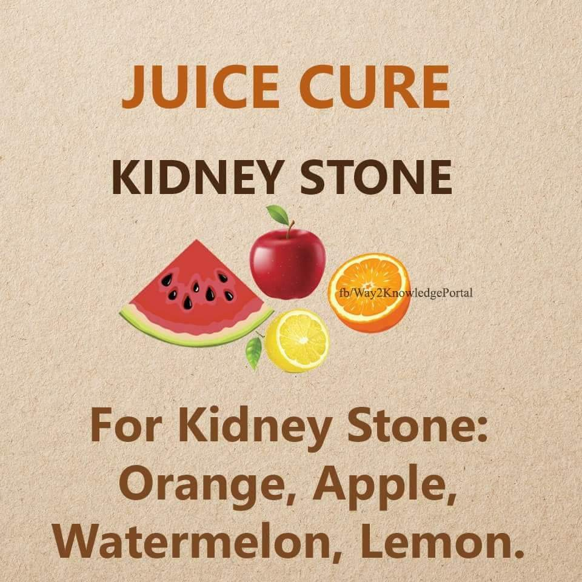
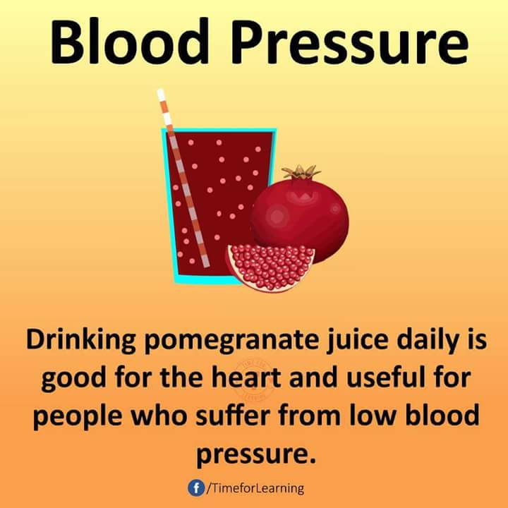
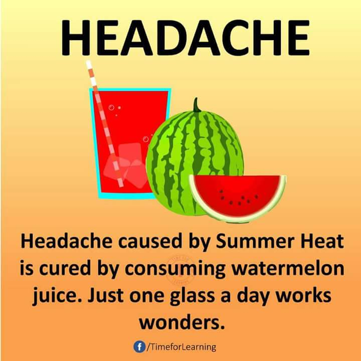

HERE WE WILL TALK ABOUT SOME COMMON DISEASES WITH THEIR CURES USING FRUITS
- For the cure of kidney stone take the following fruits; watermelon,lemon,orange and apple.

- For the cure of blood pressure;drinking pomegranate juice daily is good for the heart and useful for people who suffer from low blood pressure.

- For the cure of headache;a full/sliced water melon is enough for the headache
